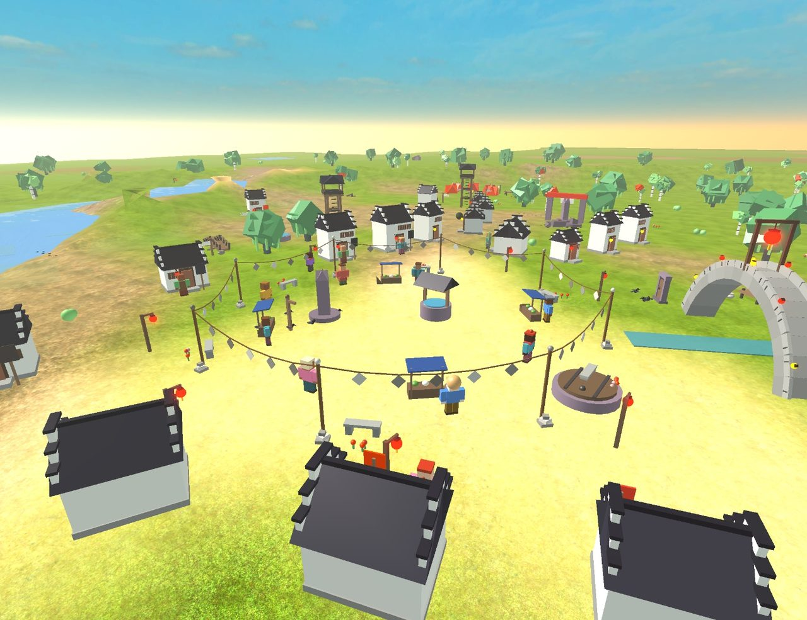
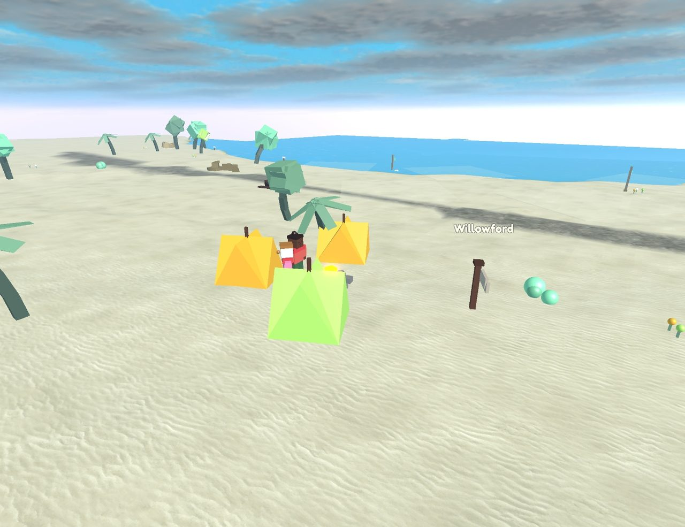
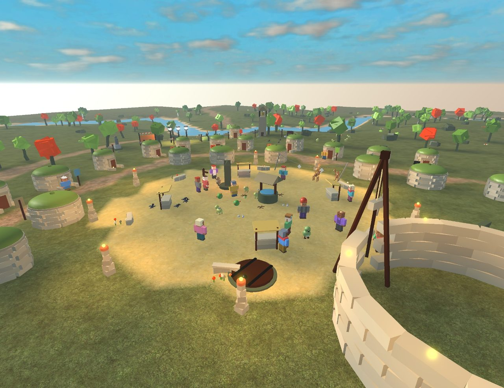
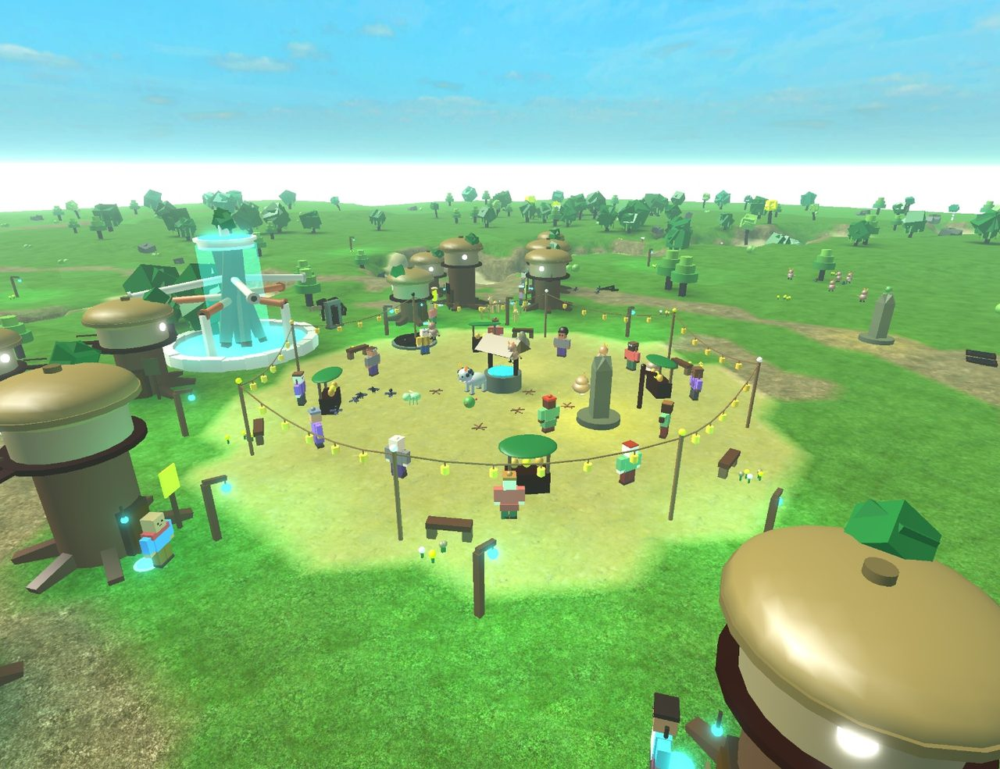
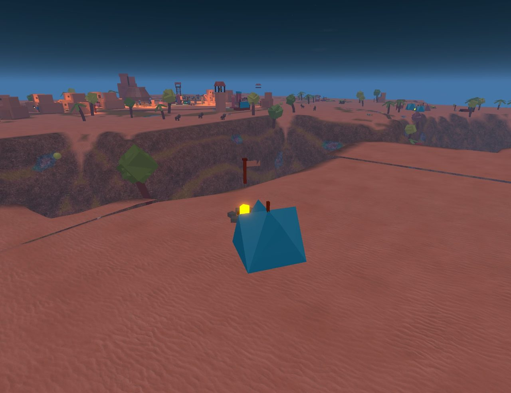
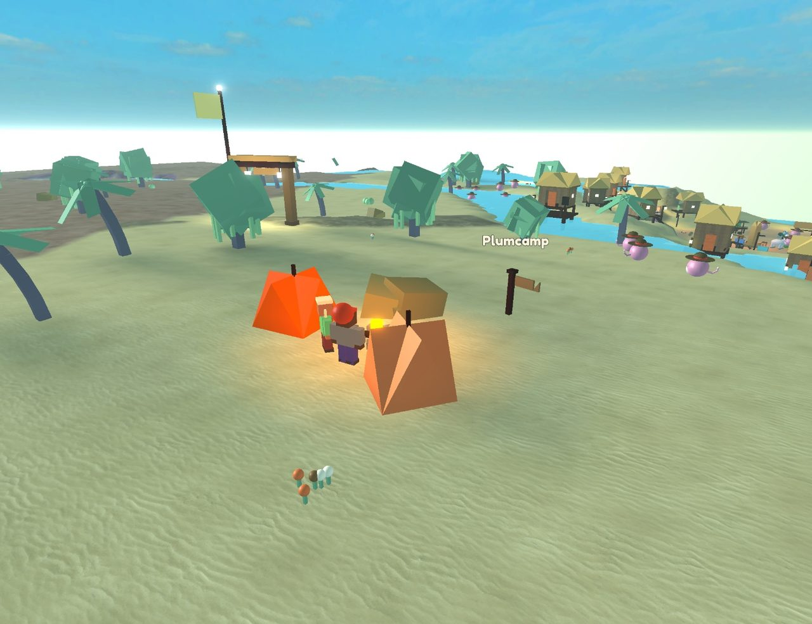

The Annals of Zibbitz
Year 0 of the Clock is 18 Oct 22:32 UTC; one world year is 3 real minutes; an era is 50 years; an age is one real day.
Written 20 Oct 12:20 UTC.
It is Year 755 of the Clock. 1557 people live in 91 towns, villages and camps across 41 lands (11 found since the clock was lit, all of them past the edge of every map, where no visitor can walk yet). 9 customs have become binding. Every line below happened by itself.
On the brink
- Keeping makers' signs is nearest to becoming a custom in Mangrove Maze: about 97% of the way.
- Baobab Reach and Archwater are still arguing over the slopes between them (since Year 753).
- The stones between Sketchmoor and Skerryhold have kept the peace 190 years; 120 honoured years make a custom.
- The stones between Skerryhold and Quill Aloft have kept the peace 17 years; 120 honoured years make a custom.
- Willowford and Skerryhold are still arguing over the slopes between them (since Year 702).
- Driftford and The Floodmark are still arguing over the slopes between them (since Year 749).
- The Floodmark and Bell Aloft are still arguing over the slopes between them (since Year 740).
- Bramble Aloft and Whistlereach are still arguing over the slopes between them (since Year 752).
- The wild stands at the last houses of Bramble Aloft.
- The wild stands at the last houses of Bell Aloft.
- The oldest person alive is Fylo of Whistlereach, 87.
The eras in one line each
- Era XVI · ongoing: Years 750–755: Mittenford split in two over whether to keep Old Stones Day.
- Era XV: Years 700–749: In Willowgate, everyone now carves their own sign by the things they make, and keeps the old signs deep. They call it “the stone-telling”.
- Era XIV: Years 650–699: The last Foldpony anywhere has not been seen again.
- Era XIII: Years 600–649: Bell Aloft is a town now.
- Era XII: Years 550–599: In Saltsteps, everyone now carves their own sign by the things they make, and keeps the old signs deep. They call it “the remembering stones”.
- Era XI: Years 500–549: In Giantsgarden, everyone now carves their own sign by the things they make, and keeps the old signs deep. They call it “signing it”.
- Era X: Years 450–499: The Rowcrabs are re-linked now, and came to live in Skerryhold. The first one walked in 55 years ago.
- Era IX: Years 400–449: Hummingstone Vale split in two over two tellings of The Open Mouth Stone, and who made it.
- Era VIII: Years 350–399: Nobody in Lanternwater or Glowpool Green remembers anymore why a row of stones crosses the Glimmercap slopes, so they've started arguing again.
- Era VII: Years 300–349: Sourain rose on a reed kite and found Velvetmoss Drifts in the clouds.
- Era VI: Years 250–299: The last few of Glimmersteps packed up and went to live in Greenglass Spires. Glimmersteps stands empty.
- Era V: Years 200–249: The last of Quillfold moved away. Quillfold stands empty.
- Era IV: Years 150–199: Nobody in Steamstep Springs remembers the years 0 to 49 anymore. Those stories were never passed on.
- Era III: Years 100–149: Siver walked past the edge of every map and found Papermoss Shallows.
- Era II: Years 50–99: Giantsgarden sent baskets of Lanternfern to Hearthward in a hungry year.
- Era I: Years 0–49: Kelpdeep split in two over whose turn it was to ring the bell.
- Before the Clock: The world was shaped before it was given time: Hearthward first, then the lands around it, then its first visitors, and at last a clock of its own.
Age III · 20 October
Era XVI · Years 750–755 · ongoing
20 Oct 12:02 UTC – 20 Oct 12:20 UTC · 132 events · full log
Years 750–755: Mittenford split in two over whether to keep Old Stones Day.
- Year 750: Floulo of Skerryhold worked out the long wool ladder again, long after the world forgot it.
How it started, in year 736: Nobody anywhere remembers how to make the long wool ladder now. - Year 750: Reedsteps Green has made up its mind: the Sortjelly nobody has seen in years? It's Fywena's doing, long ago.
How it started, in year 750: People in Reedsteps Green began to wonder about the Sortjelly nobody has seen in years.
What they didn't know: The last one near Reedsteps Green was seen in Year 725. - Year 750: Ringstone Hill held the first Miss-You Day.
How it started, in year 750: Ringstone Hill has made up its mind: the Liftsheep nobody has seen in years? It's children from tomorrow. - Year 750: The last few of Crumb Aloft packed up and went to live in Mist Aloft. Crumb Aloft stands empty.
- Year 751: Sparrow Aloft has grown from a camp into a village.
How it started, in year 750: Floumin finished Floumin's house in Sparrow Aloft. - Year 752: Bramble Aloft and Whistlereach both say the Puddlebell slopes between them are theirs.
How it started, in year 687: Puddlebell is coming back in Echobell Heights. - Year 753: Mittenford split in two over whether to keep Old Stones Day.
How it started, in year 727: Mittenford held the first Old Stones Day. - Year 753: Jeexin led 8 others out of Mittenford and founded Mistnook.
How it started, in year 753: Mittenford split in two over whether to keep Old Stones Day. - Year 753: Toott finished the statue of Toott in Reedmere, with Trialo and Dus.
How it started, in year 662: Meenain of Dune Aloft invented the Twirlcrab song. - Year 753: Toott dreamed of being remembered, and did it.
- Year 753: After 72 years in hiding, the Driftchimes of Auroral Hush came out again.
How it started, in year 681: The Driftchimes round Auroral Hush have gone into hiding: the glass bell was too much for them. - Year 753: Whistlesteps has gone back to the wild.
How it started, in year 728: The last of Whistlesteps moved away. Whistlesteps stands empty. - Year 753: Lyxo helped Foldpaper Fields and Highloom Plateau make up: now they share the Puddlebell slopes and take turns picking.
How it started, in year 744: Foldpaper Fields and Highloom Plateau both say the Puddlebell slopes between them are theirs. - Year 755: Wuvera left Glowpool Green for Glimmerford, to start fresh where nobody knew the old stories.
How it started, in year 745: Folks in Glowpool Green say Wuvera is a bit prickly.
Era XV · Years 700–749
20 Oct 09:32 UTC – 20 Oct 12:02 UTC · 825 events · full log
Years 700–749: In Willowgate, everyone now carves their own sign by the things they make, and keeps the old signs deep. They call it “the stone-telling”.
- Year 700: The Pointotters are re-linked now, and came to live in Reed Aloft. The first one walked in 84 years ago.
How it started, in year 616: One of the Pointotters walked into Reed Aloft and stayed by the fire. - Year 700: The Countotters of Echohum Drifts have changed so much that they have a new name: Countotter-the-Youngers.
How it started, in year 358: Countotters came to Echohum Drifts from Skerryhold. - Year 700: Glimmernook held the first Bell Tower Day.
How it started, in year 700: Vairo finished the bell tower in Glimmernook, with Riandle and Hur. - Year 711: Heewen finished the kite tower in Bramble Aloft Rise.
How it started, in year 112: Tri of Teacupcamp invented the reed kite. - Year 715: Whistlesteps split in two over whether to keep Old Houses Day.
How it started, in year 711: Whistlesteps held the first Old Houses Day. - Year 718: In Willowgate, everyone now carves their own sign by the things they make, and keeps the old signs deep. They call it “the stone-telling”.
How it started, in year 718: Ronaa carved Fyra's sign by the row of lampposts deeper. They never met; the stone remembers. - Year 721: Bramble Aloft is a town now.
How it started, in year 720: Diaty finished Diaty's house in Bramble Aloft, with Sywen. - Year 721: Omin finished the kite tower in Willowford, with Aim.
How it started, in year 268: Seffino of Windfelt Steppe invented the paper balloon. - Year 722: Biarao of Crumb Aloft worked out the Quillvine bread again, long after the world forgot it.
How it started, in year 619: Nobody anywhere remembers how to make the Quillvine bread now. - Year 732: Aibble led 10 others out of Windfelt Steppe and founded Honeystead.
How it started, in year 732: Windfelt Steppe split in two over years of falling-outs. - Year 733: Mist Aloft split in two over two tellings of the Napturtle nobody has seen in years.
How it started, in year 729: Mist Aloft no longer agrees about the Napturtle nobody has seen in years.
What they didn't know: The last one near Mist Aloft was seen in Year 442. - Year 736: Loro of Whistlewell Bend finished a long, warm life with the kettle singing, at 77.
- Year 740: The last of Teacuphollow moved away. Teacuphollow stands empty.
How it started, in year 739: Syver left Teacuphollow for Sketchmoor. - Year 741: Windfelt Steppe has made up its mind: the strange Snorerock that came from Highloom Plateau? It's something the Drumgeckos of Windfelt Steppe did.
How it started, in year 716: People in Windfelt Steppe began to wonder about the strange Snorerock that came from Highloom Plateau. - Year 748: In Lanternwater, everyone now carves their own sign by the things they make, and keeps the old signs deep. They call it “the long remembering”.
How it started, in year 748: Zeweno rubbed the moss off a stone by the old dock in Lanternwater and made out a worn sign: Ail built it.
Era XIV · Years 650–699
20 Oct 07:02 UTC – 20 Oct 09:32 UTC · 807 events · full log
Years 650–699: The last Foldpony anywhere has not been seen again.
- Year 650: Sketchmoor split in two over two tellings of the faded painted pole in the square.
How it started, in year 581: People in Sketchmoor began to wonder about the faded painted pole in the square.
What they didn't know: It was raised for Old Stones Day, which was kept here from Year 134 to Year 479. - Year 650: Bendleo led 8 others out of Sketchmoor and founded Crumbknoll.
How it started, in year 650: Sketchmoor split in two over two tellings of the faded painted pole in the square. - Year 650: Plaro of Lantern Aloft worked out the honey spectacles again, long after the world forgot it.
How it started, in year 640: Nobody anywhere remembers how to make the honey spectacles now. - Year 661: Crumb Aloft has made up its mind: the old well nobody remembers making? It's just the way things have always been.
How it started, in year 661: People in Crumb Aloft began to wonder about the old well nobody remembers making.
What they didn't know: It was dug by Jepipo in Year 531. - Year 665: The Netgulls of Echohum Drifts have changed so much that they have a new name: Netgull-the-Youngers.
How it started, in year 475: Netgulls came to Echohum Drifts from Skerryhold. - Year 669: The last of Woolcamp moved away. Woolcamp stands empty.
How it started, in year 668: Roro left Woolcamp for Bean Aloft. - Year 670: Thistlemere held the first Miss-You Day.
How it started, in year 670: Thistlemere has made up its mind: the Gazelantern nobody has seen in years? It's something older than anyone's grandparents. - Year 671: The Echopikas are re-linked now, and came to live in Froststead. The first one walked in 227 years ago.
How it started, in year 444: One of the Echopikas walked into Froststead and stayed by the fire. - Year 674: Now Crumb Aloft knows who dug the old well: Jepipo. They still tell the story about just the way things have always been, for fun.
How it started, in year 674: Vamin rubbed the moss off a stone by the old well in Crumb Aloft and made out a worn sign: Jepipo dug it. - Year 680: Crumb Aloft Hill split in two over years of falling-outs.
- Year 681: Meebble finished the story house in Thistlereach, with Breewen, Wroobo and Flaffin.
How it started, in year 368: Raty of Archwater invented the Lanternfern song. - Year 684: Now everyone knows what Mywen made from Quillvine and Larkreed: the Pledy thread. It hums when the wind blows and floats a little way off the ground.
How it started, in year 677: Mywen of Hearthward mixed Quillvine and Larkreed together to see what they would make. Nobody knows what it does yet. - Year 684: Willowmere split in two over whether to keep Far Guests Day.
How it started, in year 400: Willowmere held the first Far Guests Day.
- Year 694: The last Foldpony anywhere has not been seen again.
How it started, in year 693: After 66 years in hiding, the Hill Countropes of Hearthward came out again. - Year 696: Hiwen finished the tall star-watching hill in Foldpaper Fields.
Era XIII · Years 600–649
20 Oct 04:32 UTC – 20 Oct 07:02 UTC · 747 events · full log
Years 600–649: Bell Aloft is a town now.
- Year 605: The Digbirds are re-linked now, and came to live in Greenglass Spires. The first one walked in 221 years ago.
How it started, in year 384: One of the Digbirds walked into Greenglass Spires and stayed by the fire. - Year 606: Kettlefold split in two over two tellings of the faded painted pole in the square.
How it started, in year 595: Kettlefold no longer agrees about the faded painted pole in the square.
What they didn't know: It was raised for Little Stage Day, which was kept here from Year 454 to Year 454. - Year 606: Reed Aloft split in two over whether to keep Miss-You Day.
How it started, in year 483: Reed Aloft held the first Miss-You Day. - Year 611: Bondle led 5 others out of Pebble Aloft and founded Moss Aloft.
- Year 612: Ziana of Moss Aloft came to the end of a long life watching the boats, at 73.
- Year 617: Bell Aloft is a town now.
How it started, in year 616: Noox finished Noox's house in Bell Aloft, with Moobblea. - Year 620: Luffinie of Plum Aloft worked out the water clock again, long after the world forgot it.
How it started, in year 251: Vody of Moonmoth Meadows invented the water clock. - Year 620: Tair finished the statue of Louvera in Glowpool Green, with Louvera and Fleel.
How it started, in year 221: Toosy of Archwater invented the clay letters. - Year 627: In Glimmernook, everyone now carves their own sign by the things they make, and keeps the old signs deep. They call it “the long remembering”.
How it started, in year 613: Zulo carved Sooty's sign by the fountain deeper. They never met; the stone remembers. - Year 629: The Mudfowls are re-linked now, and came to live in Ringstone Hill. The first one walked in 115 years ago.
How it started, in year 514: One of the Mudfowls walked into Ringstone Hill and stayed by the fire.
- Year 631: Lantern Aloft has made up its mind: the Coilchest nobody has seen in years? It's travellers from past the edge of the map.
How it started, in year 595: People in Lantern Aloft began to wonder about the Coilchest nobody has seen in years.
What they didn't know: The last one near Lantern Aloft was seen in Year 573. - Year 633: Tail finished the star-watching hill in Kettle Aloft.
How it started, in year 620: Tail left Baobab Reach for Kettle Aloft. - Year 636: Nobody in Auroral Hush repeats the old talk about Moobo anymore. Moobo has helped so many neighbours since then.
How it started, in year 629: The old talk about Moobo followed Moobo all the way from Windfelt Steppe to Auroral Hush. - Year 641: Hushstead held the first Far Guests Day.
How it started, in year 641: Hushstead has made up its mind: the strange Hill Leanpup that came from Windcatcher Oasis? It's the doing of folk from Weatherhold Downs, before anyone here was born. - Year 649: The Wallripples of Papermoss Shallows have changed so much that they have a new name: Long Wallripples.
How it started, in year 503: Wallripples came to Papermoss Shallows from Rainstep Wells.
Era XII · Years 550–599
20 Oct 02:02 UTC – 20 Oct 04:32 UTC · 709 events · full log
Years 550–599: In Saltsteps, everyone now carves their own sign by the things they make, and keeps the old signs deep. They call it “the remembering stones”.
- Year 551: Wroos of Mistby worked out the honey bread again, long after the world forgot it.
How it started, in year 189: Sno of Sketchmoor invented the honey bread. - Year 551: Kettlefold held the first Miss-You Day.
How it started, in year 551: Kettlefold has made up its mind: the Drumgecko nobody has seen in years? It's a very old tree remembering. - Year 554: Steamstep Springs has made up its mind: the strange Spillpencil that came from Moonmoth Meadows? It's the doing of folk from Skerryhold, before anyone here was born.
How it started, in year 529: People in Steamstep Springs began to wonder about the strange Spillpencil that came from Moonmoth Meadows. - Year 565: Inkbough split in two over two tellings of the strange Guardmoth that came from Greenglass Spires.
How it started, in year 523: Inkbough no longer agrees about the strange Guardmoth that came from Greenglass Spires. - Year 565: Giara finished the story house in Moonmoth Meadows.
How it started, in year 221: Toosy of Archwater invented the clay letters. - Year 568: The Tapdusts of Echobell Heights have changed so much that they have a new name: Night Tapdusts.
How it started, in year 444: Tapdusts came to Echobell Heights from Papermoss Shallows. - Year 570: Fleemble finished the star-watching hill in Plum Aloft, with Dura.
How it started, in year 565: Fleemble left Whistlereach for Plum Aloft. - Year 576: Lutt rose on a reed kite and found Echofrost Heights in the clouds.
How it started, in year 112: Tri of Teacupcamp invented the reed kite. - Year 576: In Echofrost Heights, here, what is planted grows twice as fast and is gone twice as soon.
How it started, in year 576: Lutt rose on a reed kite and found Echofrost Heights in the clouds. - Year 581: Mityel of Sparrow Aloft came to the end of a long life watching the boats, at 84.
- Year 585: The Weavepuffers are re-linked now, and came to live in Frostfold. The first one walked in 187 years ago.
How it started, in year 398: One of the Weavepuffers walked into Frostfold and stayed by the fire. - Year 587: Toffin led 5 others out of Whistlewell and founded Driftsteps.
- Year 589: The Divemonkeys are re-linked now, and came to live in Glowpool Green. The first one walked in 197 years ago.
How it started, in year 392: One of the Divemonkeys walked into Glowpool Green and stayed by the fire.
- Year 594: Kettle Aloft split in two over too many hearths and too little room.
How it started, in year 575: Jooll finished Jooll's house in Kettle Aloft. - Year 595: In Saltsteps, everyone now carves their own sign by the things they make, and keeps the old signs deep. They call it “the remembering stones”.
How it started, in year 594: Roopip rubbed the moss off a stone by the old star-watching hill in Saltsteps and made out a worn sign: Fety built it.
Age II · 19 October
Era XI · Years 500–549
19 Oct 23:32 UTC – 20 Oct 02:02 UTC · 662 events · full log
Years 500–549: In Giantsgarden, everyone now carves their own sign by the things they make, and keeps the old signs deep. They call it “signing it”.
- Year 501: Hearthward has made up its mind: the Bobhat nobody has seen in years? It's the doing of folk from Teacupknoll, before anyone here was born.
How it started, in year 498: People in Hearthward began to wonder about the Bobhat nobody has seen in years.
What they didn't know: The last one near Hearthward was seen in Year 466. - Year 506: Woolcamp split in two over years of falling-outs.
- Year 509: The Driftoars are re-linked now, and came to live in Mangrove Maze. The first one walked in 43 years ago.
How it started, in year 466: One of the Driftoars walked into Mangrove Maze and stayed by the fire. - Year 510: Moumble finished the kite tower in Plum Aloft.
How it started, in year 45: Faiver of Lostfound Shore invented the Twirlcrab kite. - Year 510: Teacuphollow held the first Miss-You Day.
How it started, in year 510: Teacuphollow has made up its mind: the Blendinkpot nobody has seen in years? It's the wind, playing. - Year 513: The Dashpuppies of Glowpool Green have changed so much that they have a new name: Stripe Dashpuppies.
How it started, in year 376: Dashpuppies came to Glowpool Green from Lanternwater, to live where the Hookloach used to live. - Year 521: Lostfound Shore split in two over two tellings of the Sweepbucket nobody has seen in years.
How it started, in year 496: Lostfound Shore no longer agrees about the Sweepbucket nobody has seen in years.
What they didn't know: The last one near Lostfound Shore was seen in Year 290. - Year 521: Lody led 5 others out of Lostfound Shore and founded Quillstead.
How it started, in year 521: Lostfound Shore split in two over two tellings of the Sweepbucket nobody has seen in years. - Year 525: Palo finished the story house in Sparrowwick, with Tubo.
How it started, in year 132: Haibble of Inkbough invented the shell letters. - Year 533: Mol rose on a Washbunny kite and found Upsidehum Drifts in the clouds.
How it started, in year 136: Brolin of Weatherhold Downs invented the Washbunny kite. - Year 533: In Upsidehum Drifts, any song sung here, the wind keeps singing.
How it started, in year 533: Mol rose on a Washbunny kite and found Upsidehum Drifts in the clouds. - Year 536: Snaira of Acorn Aloft came to the end of a long life while the wind sang over the roofs, at 69.
- Year 544: Teex of Teacupknoll worked out the string kite again, long after the world forgot it.
How it started, in year 451: Nobody anywhere remembers how to make the string kite now. - Year 549: In Giantsgarden, everyone now carves their own sign by the things they make, and keeps the old signs deep. They call it “signing it”.
How it started, in year 549: Flil carved Voum's sign by the red dock deeper. They never met; the stone remembers.
Era X · Years 450–499
19 Oct 21:02 UTC – 19 Oct 23:32 UTC · 662 events · full log
Years 450–499: The Rowcrabs are re-linked now, and came to live in Skerryhold. The first one walked in 55 years ago.
- Year 450: Floun finished the star-watching hill in Moonmoth Meadows, with Sneetyo.
- Year 453: The Rowcrabs are re-linked now, and came to live in Skerryhold. The first one walked in 55 years ago.
How it started, in year 398: One of the Rowcrabs walked into Skerryhold and stayed by the fire. - Year 454: Sniamin led 7 others out of Pebbleford and founded Kettlefold.
How it started, in year 454: Pebbleford split in two over too many hearths and too little room. - Year 460: Rouboo of Teastep Terraces worked out the long wool ladder again, long after the world forgot it.
How it started, in year 446: Nobody anywhere remembers how to make the long wool ladder now. - Year 461: The Mapmists of Lanternwater have changed so much that they have a new name: Hill Mapmists.
How it started, in year 355: Mapmists came to Lanternwater from Glowpool Green, to live where the Glowbird used to live. - Year 462: Vaipip of Mist Aloft finished a long life with the window open to the wind, at 64.
- Year 473: Windfelt Steppe has made up its mind: the Sweepstoat nobody has seen in years? It's Snootya's doing, long ago.
How it started, in year 467: People in Windfelt Steppe began to wonder about the Sweepstoat nobody has seen in years.
What they didn't know: The last one near Windfelt Steppe was seen in Year 445. - Year 476: Biawena moved into empty Thistlemere and lit the first fire in years.
How it started, in year 476: Thistlereach split in two over whether to keep Wonder Day. - Year 476: Nobody in Ringstone Hill or The Floodmark remembers anymore why a row of stones crosses the Mistberry slopes, so they've started arguing again.
How it started, in year 400: The Mistberry slopes grew crowded again, and Ringstone Hill and The Floodmark pointed at the old row of stones instead of arguing. - Year 480: Willowmere held the first Wonder Day.
How it started, in year 480: Willowmere has made up its mind: The Umbrella Tree, and who made it? It's something older than anyone's grandparents. - Year 482: After 67 years in hiding, the Wallowmeerkats of Baobab Reach came out again.
How it started, in year 415: The Wallowmeerkats round Saltsteps have gone into hiding: the wool scarecrow was too much for them. - Year 485: Whistle Aloft split in two over too many hearths and too little room.
- Year 494: Snax rose on a Twirlcrab kite and found Spindleroot Heights in the clouds.
How it started, in year 45: Faiver of Lostfound Shore invented the Twirlcrab kite. - Year 494: In Spindleroot Heights, here, the old grow young in their dreams, and wake up wiser.
How it started, in year 494: Snax rose on a Twirlcrab kite and found Spindleroot Heights in the clouds.
Era IX · Years 400–449
19 Oct 18:32 UTC – 19 Oct 21:02 UTC · 586 events · full log
Years 400–449: Hummingstone Vale split in two over two tellings of The Open Mouth Stone, and who made it.
- Year 403: The Dripsocks of Hummingstone Vale have changed so much that they have a new name: Night Dripsocks.
How it started, in year 197: Dripsocks came to Hummingstone Vale from Weatherhold Downs. - Year 409: Hummingstone Vale split in two over two tellings of The Open Mouth Stone, and who made it.
How it started, in year 395: People in Hummingstone Vale began to wonder about The Open Mouth Stone, and who made it.
What they didn't know: It was there before the clock began. - Year 409: Har led 9 others out of Hummingstone Vale and founded Froststead.
How it started, in year 409: Hummingstone Vale split in two over two tellings of The Open Mouth Stone, and who made it. - Year 410: Pebbleford held the first Far Guests Day.
How it started, in year 410: Pebbleford has made up its mind: the strange Pilefox that came from Windcatcher Oasis? It's something the Brushfans of Rainstep Wells did. - Year 416: In Spindlecloud Drifts, stones here grow a little every year.
How it started, in year 416: Emel rose on a Haulant kite and found Spindlecloud Drifts in the clouds. - Year 419: Now Beanmere knows who dug the old well: Troutt. They still tell the story about the doing of folk from Windfelt Steppe, before anyone here was born, for fun.
How it started, in year 419: Tryffin rubbed the moss off a stone by the old well in Beanmere and made out a worn sign: Troutt dug it. - Year 421: After 61 years in hiding, the Mendturtles of Glowpool Green came out again.
How it started, in year 360: The Mendturtles round Glowpool Green have gone into hiding: the reed kite was too much for them. - Year 422: Poul finished the kite tower in Saltsteps, with Leett and Pliasy.
How it started, in year 278: Yttel of Redspire Mesa invented the steam balloon. - Year 425: Quill Aloft split in two over too many hearths and too little room.
How it started, in year 414: Zaix left Skerryhold for Quill Aloft. - Year 430: Lesyo of Kelpdeep worked out the felt map again, long after the world forgot it.
How it started, in year 152: Leem of Hummingstone Vale invented the felt map. - Year 432: The last few of Puddleknoll packed up and went to live in Rosecut Canyon. Puddleknoll stands empty.
- Year 433: Inkbough has made up its mind: the strange Guardmoth that came from Greenglass Spires? It's something the Tradepots of Inkbough did.
How it started, in year 421: People in Inkbough began to wonder about the strange Guardmoth that came from Greenglass Spires. - Year 443: Troubo finished the kite tower in Mangrove Maze.
How it started, in year 201: Meena of Windcatcher Oasis invented the paper balloon. - Year 445: One of the Sailsnails walked into Lowtide Flats and stayed by the fire.
How it started, in year 39: Tumble of Windfelt Steppe invented the Beanbean tea. - Year 446: Snyn rose on a paper balloon and found Thimblefrost Isles in the clouds.
How it started, in year 268: Seffino of Windfelt Steppe invented the paper balloon.
Era VIII · Years 350–399
19 Oct 16:02 UTC – 19 Oct 18:32 UTC · 542 events · full log
Years 350–399: Nobody in Lanternwater or Glowpool Green remembers anymore why a row of stones crosses the Glimmercap slopes, so they've started arguing again.
- Year 354: The Perchowls round Archwater have gone into hiding: the Twirlcrab kite was too much for them.
- Year 356: Mossknoll split in two over whether to keep Floor Hum Day.
- Year 356: Leevera led 4 others out of Mossknoll and founded Glimmerwick.
- Year 360: The Floodmark has made up its mind: the Chimedonkey nobody has seen in years? It's travellers from past the edge of the map.
What they didn't know: The last one near The Floodmark was seen in Year 306. - Year 362: Oll of Ringstone Hill worked out the deep clay well again, long after the world forgot it.
- Year 365: Wavero finished the star-watching hill in Acorngate, with Eell.
- Year 370: Fernwick split in two over whether to keep Old Stones Day.

- Year 372: Raty rose on a Twirlcrab kite and found Brightmoss Drifts in the clouds.
- Year 372: In Brightmoss Drifts, rivers here run in slow circles.
- Year 375: Nobody in Lanternwater or Glowpool Green remembers anymore why a row of stones crosses the Glimmercap slopes, so they've started arguing again.
- Year 380: One of the Catchfinches walked into Dunemere and stayed by the fire.
- Year 380: Sketchmoor held the first Story House Day.
- Year 388: Nobody in Giantsgarden repeats the old talk about Tees anymore. Tees has helped so many neighbours since then.
- Year 391: The Wallowmeerkats of Inkbough have changed so much that they have a new name: Hill Wallowmeerkats.
How it started, in year 256: Wallowmeerkats came to Inkbough from Baobab Reach. - Year 399: The last of Larknook moved away. Larknook stands empty.
How it started, in year 398: Emel left Larknook for Mangrove Maze.
Era VII · Years 300–349
19 Oct 13:32 UTC – 19 Oct 16:02 UTC · 495 events · full log
Years 300–349: Sourain rose on a reed kite and found Velvetmoss Drifts in the clouds.
- Year 301: Brody finished the statue of Ain in Weatherhold Downs.
- Year 305: Mittenford split in two over whether to keep Story House Day.

- Year 306: The Hangboars of Lowtide Flats have changed so much that they have a new name: Shore Hangboars.
- Year 317: Nobody in Ringstone Hill repeats the old talk about Buffin anymore. Buffin has helped so many neighbours since then.
- Year 318: Ever finished the story house in Kelpdeep, with Giamble, Woobble and Douffin.
- Year 319: Sourain rose on a reed kite and found Velvetmoss Drifts in the clouds.
- Year 324: Lostfound Shore has made up its mind: the Sweepbucket nobody has seen in years? It's the doing of folk from Frostfold, before anyone here was born.
What they didn't know: The last one near Lostfound Shore was seen in Year 290. - Year 328: Voumin of Highloom Plateau worked out the paper balloon again, long after the world forgot it.
- Year 328: The wild came right up to the last houses of Archwater, and Dipbuckets with it.
- Year 331: Chasesleds came to Windfelt Steppe from Auroral Hush, to live where the Skatepika used to live.
- Year 333: Loulo led 5 others out of Fernwick and founded Bellwell.
- Year 335: Loulo of Bellwell finished a long, warm life with the kettle singing, at 75.
- Year 341: Baobab Reach held the first Little Stage Day.
- Year 344: In Velvetbell Drifts, every sound made here comes back a day later.
Era VI · Years 250–299
19 Oct 11:02 UTC – 19 Oct 13:32 UTC · 441 events · full log
Years 250–299: The last few of Glimmersteps packed up and went to live in Greenglass Spires. Glimmersteps stands empty.
- Year 251: Dunemere has grown from a camp into a village.
- Year 256: Debble of Tusklands worked out the glass bell again, long after the world forgot it.
- Year 256: Satt finished the story house in Teacuphollow, with Wrooro, Aix and Nila.
- Year 262: Thistlereach has made up its mind: the Dipfinch nobody has seen in years? It's a very old tree remembering.
- Year 264: Reety of Willowmere reached the end of a long, warm life by the fire one quiet evening, at 72.
- Year 265: The last few of Glimmersteps packed up and went to live in Greenglass Spires. Glimmersteps stands empty.
- Year 276: Nobody in Tusklands remembers the years 0 to 49 anymore. Those stories were never passed on.
- Year 278: Sneen rubbed the moss off a stone by the old statue in Hummingstone Vale and made out a worn sign: Rendle carved it.
- Year 278: Rouminin finished the statue of Leett in Rainstep Wells.
- Year 283: Lanternwater held the first Little Stage Day.
- Year 283: Comblambs came into Ringstone Hill looking for Puddlethistle.
- Year 289: The Guardmoths of Windfelt Steppe have changed so much that they have a new name: Sleepy Guardmoths.
- Year 290: Glimmersteps has gone back to the wild.
- Year 299: Mura led 4 others out of Baobab Reach and founded Dunestead.
Era V · Years 200–249
19 Oct 08:32 UTC – 19 Oct 11:02 UTC · 422 events · full log
Years 200–249: The last of Quillfold moved away. Quillfold stands empty.
- Year 201: Glowpool Green held the first Bell Tower Day.

- Year 203: Vidyo led 5 others out of Glimmersteps and founded Glimmernook.
- Year 206: Lin left Moonmoth Meadows for Lowtide Flats, to start fresh where nobody knew the old stories.
- Year 210: Acorngate has made up its mind: the Countotter nobody has seen in years? It's giants who lived here before.
- Year 213: Lostfound Shore split in two over a fence a hand too far left.
- Year 215: Moomble finished the bell tower in Steamstep Springs, with Vyra, Lias and Murao.
- Year 224: The wild came right up to the last houses of Lanternwater, and Hookloaches with it.
- Year 226: The last of Quillfold moved away. Quillfold stands empty.
- Year 229: Siabble finished the story house in Tusklands.
- Year 234: Acorngate let Skerryhold have the Willowreed slopes, and went further out for their own.
- Year 234: Brilia of Skerryhold worked out the kelp cloth again, long after the world forgot it.
- Year 235: The Leanpups of Baobab Reach have changed so much that they have a new name: Hill Leanpups.
- Year 242: Loumin carved Pleer's sign by the statue of Flymble deeper. They never met; the stone remembers.
- Year 243: The people of Foldpaper Fields pushed the wild back past their far fields.
Era IV · Years 150–199
19 Oct 06:02 UTC – 19 Oct 08:32 UTC · 389 events · full log
Years 150–199: Nobody in Steamstep Springs remembers the years 0 to 49 anymore. Those stories were never passed on.
- Year 151: Geelia finished the star-watching hill in Ringstone Hill, with Fliffin and Por.
- Year 158: Hearthward paid Giantsgarden back at last, and the old grumbling stopped.
- Year 158: Humbleo finished the story house in Skerryhold.
- Year 160: Skerryhold has made up its mind: The Twice-Measured Boat, and who made it? It's the land itself, talking in its sleep.
- Year 162: Nar of Mistby had a last cup of tea at the end of a long, full life, at 75.
- Year 163: Auroral Hush and Highloom Plateau set a row of stones across the Bellreed slopes: this side for one, that side for the other.
- Year 170: Giantsgarden held the first Far Guests Day.
- Year 171: Vooty helped Lowtide Flats and Giantsgarden make up: now they share the Lanternfern slopes and take turns picking.
- Year 172: Glowpool Green paid Giantsgarden back for the baskets of the hungry years.
- Year 180: Chasesleds came into Highloom Plateau looking for Larkmoss.
- Year 186: Skerryhold and Sketchmoor both say the Teacupbean slopes between them are theirs.
- Year 188: Losy of Redspire Mesa worked out the string scarecrow again, long after the world forgot it.
- Year 191: Rosecut Canyon split in two over a borrowed ladder.
- Year 195: Nobody in Steamstep Springs remembers the years 0 to 49 anymore. Those stories were never passed on.
Era III · Years 100–149
19 Oct 03:32 UTC – 19 Oct 06:02 UTC · 403 events · full log
Years 100–149: Siver walked past the edge of every map and found Papermoss Shallows.
- Year 107: Liawen of Mossknoll reached the end of a long, warm life by the last fire, at 82.
- Year 109: Siver walked past the edge of every map and found Papermoss Shallows.
- Year 109: In Papermoss Shallows, things dropped here float up slowly by night.
- Year 110: Hearthward has made up its mind: the strange Mendturtle that came from Glowpool Green? It's a very old tree remembering.
- Year 111: Rosecut Canyon split in two over whether rain is wet on purpose.
- Year 112: Redspire Mesa sent baskets of Willowbean to Archwater in a hungry year.
- Year 123: Windfelt Steppe paid Highloom Plateau back for the baskets of the hungry years.
- Year 124: Bobeels came into Moonmoth Meadows looking for Quillvine.
- Year 126: Mir finished the story house in Windfelt Steppe.
- Year 130: Giantsgarden held the first Bell Tower Day.
- Year 132: People in Giantsgarden still say Hearthward never paid back the baskets.
- Year 132: The water rose in Kelpdeep and stayed a month.
- Year 140: Nar led 9 others out of Mangrove Maze and founded Mistby.
- Year 140: Fleelie finished the story house in Larknook, with Gymble, Tialia and Outy.
Era II · Years 50–99
19 Oct 01:02 UTC – 19 Oct 03:32 UTC · 380 events · full log
Years 50–99: Giantsgarden sent baskets of Lanternfern to Hearthward in a hungry year.
- Year 53: Lowtide Flats split in two over a goat in the garden.
- Year 53: Waffin finished the star-watching hill in Windcatcher Oasis.
- Year 53: People began calling Gabble Gabble the Founder.
- Year 60: Inkbough held the first Old Stones Day.
- Year 61: The water rose in Inkbough and stayed a month.
- Year 68: No one left in Kelpdeep remembers who built the star-watching hill.
- Year 72: Giantsgarden sent baskets of Lanternfern to Hearthward in a hungry year.
- Year 75: Wrera finished the star-watching hill in Sketchmoor, with Lin and Ailla.
- Year 75: The unfinished fountain in Lowtide Flats fell down.
- Year 80: Mossy of Auroral Hush came to the end of a long life with a song half sung, at 87.
- Year 83: No rain fell in Foldpaper Fields all summer.
- Year 84: Pisyin led 9 others out of Windcatcher Oasis and founded Sparrowwick.
- Year 90: Mittenford has made up its mind: the light that moves on the hill at night? It's the wind, playing.
- Year 93: Tiefishes came into Mangrove Maze looking for Larkmoss.
Age I · 18 October
Era I · Years 0–49
18 Oct 22:32 UTC – 19 Oct 01:02 UTC · 281 events · full log
Years 0–49: Kelpdeep split in two over whose turn it was to ring the bell.
- Year 2: The water rose in Inkbough and stayed a month.
- Year 6: Bobbin finished the star-watching hill in Kelpdeep.
- Year 6: Greenglass Spires held the first Little Stage Day.
- Year 10: Sage finished the star-watching hill in Glowpool Green, with Burble.
- Year 13: Kelpdeep split in two over whose turn it was to ring the bell.
- Year 13: People began calling Emeka Emeka the Founder.
- Year 20: Kit of Redspire Mesa came to the end of a long life with a song half sung, at 64.
- Year 20: No rain fell in Kelpdeep all summer.
- Year 22: Fera led 7 others out of Rainstep Wells and founded Pebbleford.
- Year 30: Greenglass Spires has made up its mind: The First Seed, and who made it? It's children from tomorrow.
- Year 33: Dragbisons came into Tusklands looking for Acorncap.
- Year 33: People in Skerryhold began to wonder about the strange Hangboar that came from Steamstep Springs.
- Year 43: Pax dreamed of being remembered, and did it.
- Year 47: Tam of Rainstep Wells worked out the wool scarecrow again, long after the world forgot it.
Before the Clock
4 to 18 October 2026, real time
- 18 Oct, 22:32 UTC: The clock was lit. From here on the world lives its own years, twenty for every real hour, whether anyone is watching or not.
- 17–18 Oct: Hearthward learned to greet: woolly creatures in every square, a townsperson's first hello, a seed that wakes into a companion.
- 17 Oct: The first visitors came, stayed a few minutes, found nothing that answered them, and left. The world was rehearsed with forty-eight imagined visitors, who all left too, for the same reasons.
- 10–14 Oct: The lands were raised round Hearthward, near thirty of them, each with its own town, people, creatures, plants and landmark, joined into one round world with no edges.
- 5–9 Oct: The world learned its own laws: monsters as loops to be calmed, homes that wait for their owners, paths worn by walking, wishes planted by wells.
- 4–5 Oct: Hearthward was raised: a town round a great hearth, its well, its stalls, its first people and the creatures of its fields.
- 4 Oct: The old world, Knightless, was set aside as a memory, and Zibbitz began from nothing in the same place.
Reconstructed from the building logs; the days are real, the order of some is approximate.